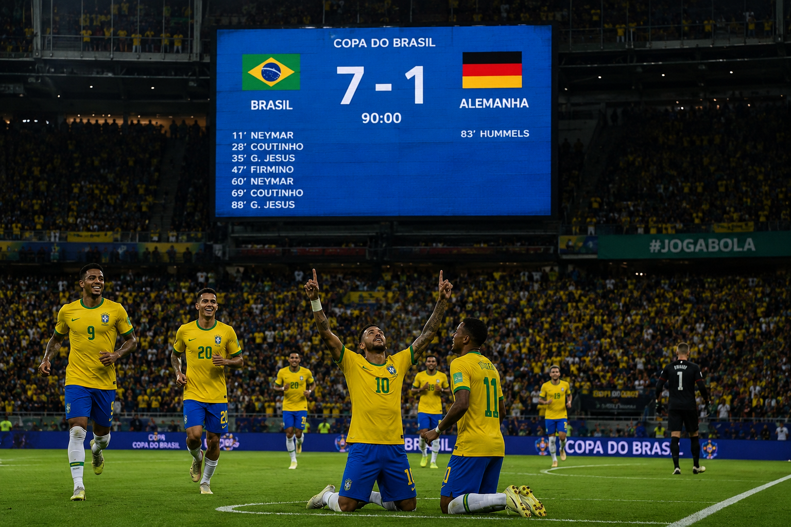

Brasil garante vaga na final da copa do mundo
Por: Yasmin
Brasil goleia Alemanha de 7 a 1 e garante vaga na final a Copa o mundo. A seleção Brasileira surpreendeu o mundo ao fazer um jogo histórico contra a Alemanha na semifinal, o Brasil dominou a partida e garantiu sua vaga na final da Copa do mundo.